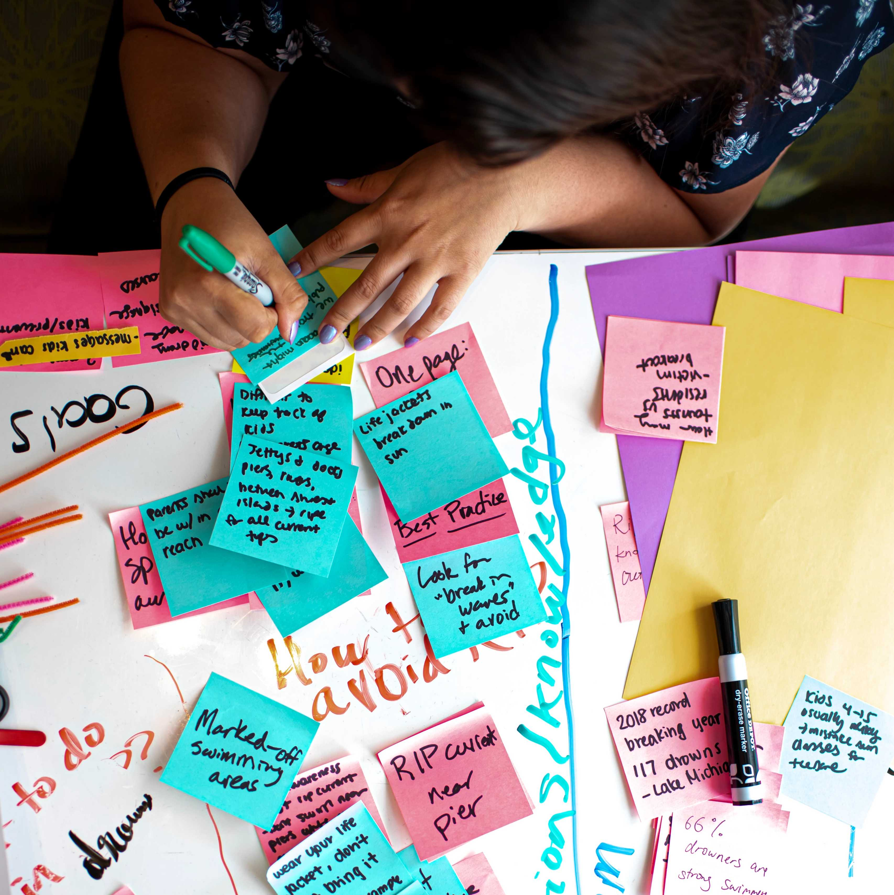

Showcase Your Projects
Creating a standout portfolio involves more than just showcasing your work. Here are some tips to help you build a portfolio that effectively communicates your value to potential employers:
- Choose the Right Platform: Select a platform that suits your needs and is easy to navigate. Consider factors like customization options, ease of use, and how well it showcases visual content.
- Highlight Key Projects: Select projects that best demonstrate your skills and achievements. Include a variety of work that reflects your versatility and expertise.
- Provide Context: For each project, include a brief description
Portfolio Building Resources
A well-crafted portfolio is a powerful tool to demonstrate your skills, experiences, and accomplishments to potential employers. It provides a visual representation of your work and allows you to tell your professional story in a compelling way. Whether you're a designer, developer, researcher, or any other type of professional, having an online portfolio can set you apart in today's competitive job market.
On this page, you'll find resources and tips to help you create an effective portfolio that highlights your strengths and aligns with your career goals. From selecting the right platform to curating your best work, we've got you covered.